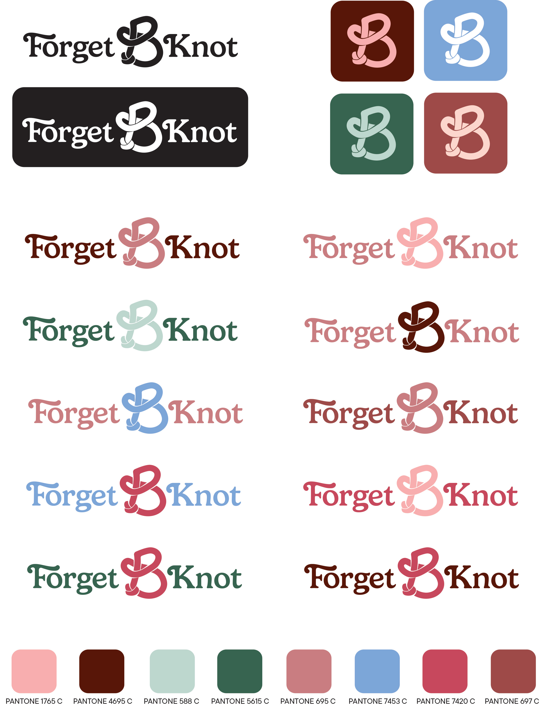
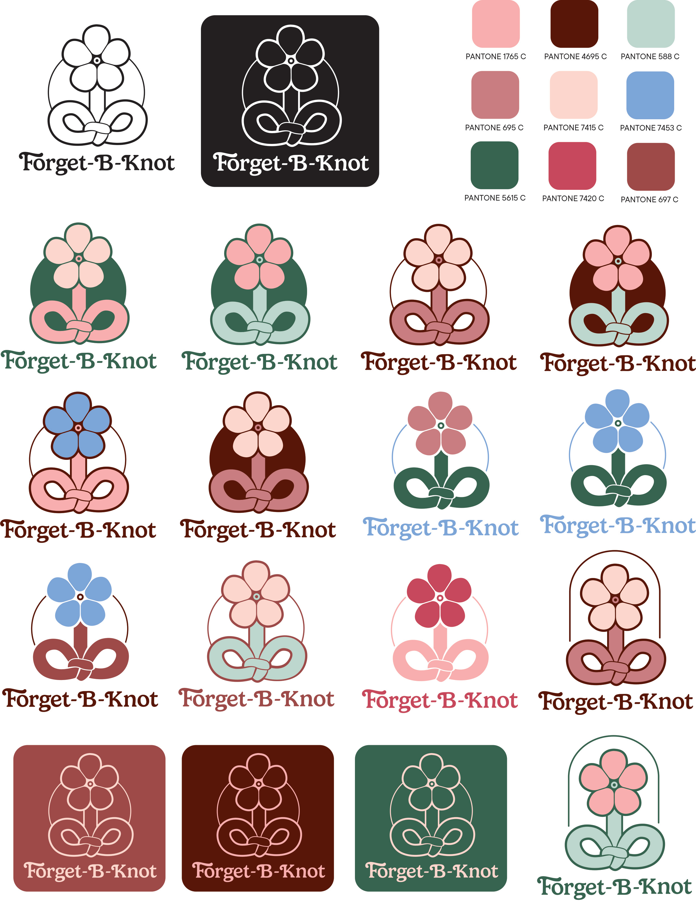

Weekly Schedule · Assignment 1: Logo Re-design
WEEK 5
Agenda:
1) Check-in
2) Review Colour Lecture
3) Prof and student sketching partners meeting
one on one
4) Keep developing logos
5) Recap
Due Week 6
Submit ONE PDF file of all exercises to Brightspace on the due date.
4th Final round - digital and colour
1) Show your final two distinctly different versions of the logo.
2) Computer-generated images/type in position. You may have decided on type placement or you may be still deciding on fonts and placement.
3) You should be showing MULTIPLE COLOUR variations. YOU HAVE TO IDENTIFY PANONTE SOLID C COLOURS BEING USED. (some of the samples below may not show that but you have to)
4) You should have a BW, COLOUR and REVERSE at this stage.




Colour Lecture/Refresher on Pantone Colours
DIGITAL COLOUR - STUDENT SAMPLES
NOTE
Some of these samples do not indicate the Pantone Solid C colours - you must include these colour swatches with code on your submission. Make sure you do not name your Pantone colour a Pantone P - this indicates Process colour.